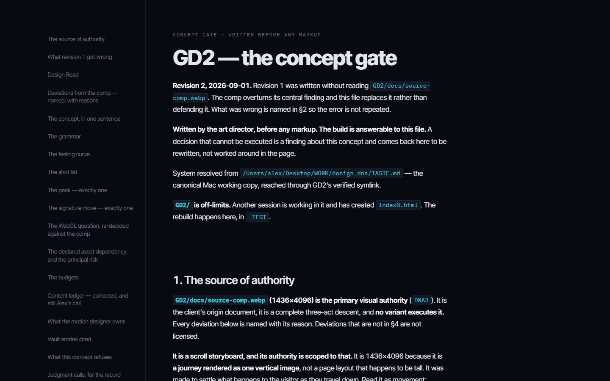

GD 2 AAN — every version
7 labs, 30 versions, one shelf.
Nothing in this tree was deleted, so every version any of these labs produced can still be opened and judged against the ones beside it. This page is the only index of them.
Every lab is a folder and every version is a folder inside it.
Each card says what the version is and what it was built to
settle — both lifted from a document that already existed.
tools/versions.json names the source for every line.
Root
aan test 2 — the concept page
The page this whole shelf grew out of, plus the concept document it was argued from. Открыть лабораторию →
-

aan test 2 / hero
Summit act on AVIF plates, pinned for one viewport. Sky and mountain rise at differing rates; the near plate grows into a 34px blur instead of travelling out. Route drawn by scroll, two callouts opening at the fractions the descent meets them.
The source of index1_1 and of aan test 4/index9 — the version whose near-plane defocus was carried into both.
loads GSAP by relative dynamic import, so file:// refuses it — index1_1 is this page made portable. Was aan test 2/index.html until that folder grew a portal of its own on 2026-09-03; the page itself is unchanged.
needs a server
-

aan test 2 / concept-page
The 40 KB concept document rendered in the browser through marked.
Not a version — the written argument the versions are answers to.
pulls marked from cdnjs, so it needs the network but not a server
needs the network
aan test 4 — one hero, ten arguments
Each version says the same things and only disagrees about how. Content never changes; index4 is the reference for copy, figures and links. Descriptions from aan test 4/docs/EXPERIMENT.md. Открыть лабораторию →
-

index1
The production page. PNG hero, scrolled route, scene 2 in water.
The baseline. The design system was extracted from this one.
was index.html until aan test 4's own hub took that name
needs a server
-

hero-v2
index with three AVIF sources, nothing else.
What the AVIF plates cost the picture.
needs a server
-

index2
index with the v2 footage cut.
Which ocean grade to ship.
opens from disk
-

index3
3D mountain, full WebGL, route drawn on the terrain.
Can the PNG hero become real geometry without losing the scroll?
the only captured route that is on the rock at every frame, and the only one that disappears and reappears
needs a server
-

index4
Same as index3 with the second mountain (92-mountain).
Which of the two models carries the shot.
identical module, different mesh, zero occlusion events — the route's quality is a property of the mesh, not the algorithm
needs a server
-

index5
No canvas at all. Chaptered editorial, five acts, one pinned act.
Whether the page needs 3D to be good, or whether composition is enough.
opens from disk
-

index6
Scene 2 as a 2.5D ocean: flat plates over the real footage, depth from differing parallax rates.
Whether the WebGL diver is worth 900KB of three plus a 3.3MB rig.
opens from disk
-

index7
The vault reading. Navy alternating with a warm neutral, one governing event on the first screen, the record published as a plate. No canvas, no video, no scroll-driven anything.
Whether the direction holds when every structural decision has to name the vault entry it comes from — and whether the page still has to be dark.
the only version that broke free of the client comp's metaphor
opens from disk
-

index8
index without the diver. Ships no three.js and no 3.3MB rig at all.
Whether the swimmer in scene 2 ever earned the frame.
its header records the previous author's judgement: "index is the strongest of the seven"
opens from disk
-

index9
The GD_LAB_TEST hero brought in whole — its own palette, its own tokens, Lenis under the scroll. The near plate leaves by growing into blur instead of travelling out.
Whether a near plane should defocus rather than leave: the frame goes soft instead of emptying, so the next scene has something to emerge from.
self-contained in assets9/, fonts repointed to the local faces
opens from disk
-

Design system
The tokens, the seven type ranks and the measured contrast table, computed from the live CSS at load.
Not a version — the rulebook every version above is judged against.
opens from disk
aan test 5 — the Aperture
A restart that rejected travel as the subject and proposed resolution instead. Implementation is stopped; index3 was rejected in full and is kept only as a failed experiment. Открыть лабораторию →
-

index1
First build of the Aperture architecture: intro, mountain hold, path to summit, callouts, ridge occlusion, then the takeover into water.
Whether resolution rather than travel can carry the scroll story.
opens from disk
-

index2
Second pass, captured in two states — clean, and with the path drawn.
Whether the path belongs on this composition at all. The with-path variant is filed REJECTED.
opens from disk
-

index3
Rejected in full as a visual direction. Kept only as a failed experiment — not to be polished, re-parameterised, renamed, or used as a base.
Grounds recorded verbatim: a white cable over a mountain instead of a path integrated with terrain; oversized dots resembling editing handles; disconnected route fragments; random callout placement; blur concealing weak composition; two scene panels with a visible boundary; a technical implementation more developed than its visual judgement.
opens from disk
-

proto / hero-proof
H1/H2 hero proof on a 700vh spacer. Type lives in the negative space, never on the peak.
Where the headline can sit once the peak owns the centre of the frame.
pulls its faces from Google Fonts, so it wants the network
needs the network
aan test 1 — the terrain lab
Not a design. A reusable Three.js / GSAP pipeline for a heavy terrain asset, plus throwaway presentation experiments on top of it. One Vite entry routes all nine by query parameter, so no mode pays for another's code. Открыть лабораторию →
-

/ — inspection viewer
Neutral technical viewer — OrbitControls, debug readout, wireframe toggle, Top/Oblique/Low cameras. The reference for judging the asset itself.
The terrain as delivered: 227,799 vertices, 450,000 triangles, normalised to a 20-unit span.
needs a server
-

?cinematic=1
300vh scroll, pinned WebGL stage, one scrubbed GSAP timeline driving the whole camera move, HTML typography over the canvas.
Temporary motion study. Its scrim strength is derived from measured contrast against the terrain's brightest region, not chosen by eye.
needs a server
-

?typeLab=1
Giant "GD" as real TextGeometry placed onto the terrain by raycasting. Three treatments (Inlay / Monolith / Beacon), full control panel, slow auto camera.
Whether type can sit in the landscape as geometry rather than over it as HTML.
its typeface JSON is generated from a licensed system font and must be regenerated from an OFL face before anything ships
needs a server
-

?mountainLab=1
Loads the 12 Unreal-derived mountains from one GLB with named nodes, arranges them as a foreground/midground/background corridor, plays a 2.5s assembly on load, then hands the camera to scroll.
The approved 12-mountain composition. No clouds, no ocean, no diver, no colour grading.
needs a server
-

?mountainLabV2=1
A deliberate break from V1, not a patch on it. Real scanned ground: the 450k-triangle photogrammetry landscape with 2K albedo/normal/AO, used instead of V1's procedural plane.
Whether real erosion and albedo variation fix the white carpet that every attempt to patch V1's floor produced.
V1 is untouched at ?mountainLab=1
needs a server
-

?mountainMaterialTest=1
Shows the approved 12-mountain composition and switches between the borrowed Unreal materials baked into the GLB and a new world-space triplanar rock/snow material.
Whether the borrowed materials can be replaced. No man, no route, no landing copy, no ocean.
does not currently run: it reads CFG.scene.key.direction, and mountain-composition.js now describes the key light as azimuth/elevation. Verified 2026-09-03 — the preview is the loading state, which is as far as the page gets.
needs a server
-

?manScroll=1
One feeling: you were standing beside this person, and then you found out how big the world around him is. GSAP owns one scrubbed value driving camera, look-at and FOV; the rig owns bones on frame delta. GSAP never touches a bone.
The mechanical baseline for the character reveal.
needs a server
-

?manScrollArt=1
Art-direction experiment on the same mechanics. Everything reusable is imported, never edited — loadTerrain, CharacterRig, the placement and the scrub pattern.
What art direction alone changes, with the mechanics held identical to manScroll.
needs a server
-

?manTest=1
Drops the Fab "Survival Character FREE" onto the normalised terrain to judge visual quality, scale and pose. Transforms split three ways — placement, facing, and the rig's own bones — so a camera pass and the idle can never overwrite each other.
Human scale against the terrain. Not part of any design.
needs a server
aan test 6 — Montfort mirror
An offline 1:1 copy of mont-fort.com kept for studying its architecture, and the variant overlays built against it. Открыть лабораторию →
-

Оригинал Montfort
Untouched mirror of mont-fort.com. 33 pages, ~260 MB, URL structure kept 1:1 so every /_astro/ and /assets/ path resolves without rewriting.
The base every variant is an overlay on.
needs a server
-

Проба пера
First variant — palette work. A variant is an overlay, not a copy: only changed files live in variants/01-proba/, the rest is served from the base.
Whether the mirror's architecture survives being re-coloured.
needs a server
aan test 3 — GD_LAB_TEST
Its own git repository, one commit deep. Nothing has been built in it yet. Открыть лабораторию →
tools/versions.json · 2026-09-06